Beispielprojekt
Einführung - Best Practice Beispiel „Workflow“
Anhand des Projekts „Workflow“ sollen exemplarisch die Arbeitsschritte von der Datenerfassung über die Datenaufbereitung bis hin zum Export in das Simulationsprogramm HYSTEM-EXTRAN 8 erläutert werden. Es handelt sich dabei um ein Teilnetz im Norden des Bochumer Stadtteils Hiltrop.
Vorbereitung
Die Daten, die in diesem Workflow benutzt werden, stehen in dieser Excel-Datei zum download bereit. Eine Videoanleitung zur Vorbereitung des Projektes ist hier zu finden.
Falls QKan noch nicht auf dem Rechner installiert ist, ist hier eine Anleitung zur Installation des QKan Plugins zu finden.
Anlegen einer neuen QKan-Datenbank
Zu Beginn eines jeden Projektes muss eine neue QKan-Datenbank erzeugt werden. Mit 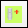 Neue QKan-Datenbank erstellen öffnet sich ein Fenster für die automatische Erzeugung einer neuen Datenbank. Als erstes muss der Pfad und der Name der Datenbank gewählt und das gewünschte Projektionssystem festgelegt werden. Dann wird das entsprechende Projekt gewählt. Das Fenster sollte nun vollständig ausgefüllt sein und kann mit OK geschlossen werden.
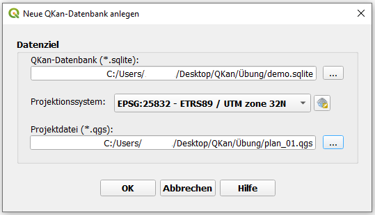{kind=link}
Hinterlegung einer Karte
Zur Orientierung und ansprechenderen Darstellung sollte ein passender Kartendienst hinterlegt werden. Über „Strg + L“ wird die Datenquellenverwaltung geöffnet. Unter „WMS/WMTS“ kann ein entsprechender Kartendienst ausgesucht werden. Für dieses Projekt wird der Kartendienst (über neu) „DTK Open Data NRW“ genommen mit der URL „https://www.wmts.nrw.de/geobasis/wmts_nw_dtk“. Nachdem die Eingaben mit OK bestätigt wurden, werden über Verbinden die entsprechenden Kachelsätze geladen. In dem dazugehörigen Layer kann die gewünschte Karte ausgewählt (hier: DTK Farbe EPSG_25832…) und mit Hinzufügen zum Projekt hinzugefügt werden.

Die Karte erscheint nun in den Layern des QKan-Projektes. Empfehlenswert ist es Karten in einem eigenen Layer zu hinterlegen. Um die Karte sich anzeigen zu lassen kann über einen Rechtsklick auf den entsprechenden Layer die Option Auf Layer zoomen ausgewählt werden. Nun sollte die Karte im Fenster erscheinen.
Übernahme von Kanaldaten aus Excel
Als nächstes werden die Kanaldaten aus der Excel-Tabelle übernommen. Dafür können die Daten ganz einfach mit copy & paste aus der Excel-Tabelle nach QKan übernommen werden. Beispielhaft wird dies hier an den Daten für die Schächte gezeigt.
Zunächst muss die Excel-Tabelle geöffnet und die dazugehörige Karteikarte „schaechte“ ausgewählt werden.
Mit „Strg + A“ werden alle Einträge der Tabelle ausgewählt und mit „Strg + C“ können diese in die Zwischenablage kopiert werden.
Wichtig hierbei ist, dass auch die Kopfzeile mit den Überschriften mit ausgewählt und kopiert wird.
Vor dem Einfügen in QGIS muss überprüft werden, dass der richtige Layer (hier „Schächte“) ausgewählt, aber nicht im Bearbeitungsmodus ist.
Anschließend kann noch die Zuordnung über Tabellendaten aus Clipboard: Zuordnung anzeigen überprüft werden.
Wenn die Zuordnung wie gewünscht angezeigt wird, können nun über  Tabellendaten aus Clipboard einfügen die Schächte eingefügt werden.
Die Schächte sollten nun als graue Punkte auf der Karte erscheinen.
Tabellendaten aus Clipboard einfügen die Schächte eingefügt werden.
Die Schächte sollten nun als graue Punkte auf der Karte erscheinen.
{kind=link}
Analog dazu können nun die Daten für die Auslässe, Haltungen und das Teilgebiet übernommen werden. Es sollte immer darauf geachtet werden, dass der richtige Layer ausgewählt ist. Wurden alle Daten aus der Excel-Tabelle übernommen, sollte die Karte wie unten dargestellt aussehen:
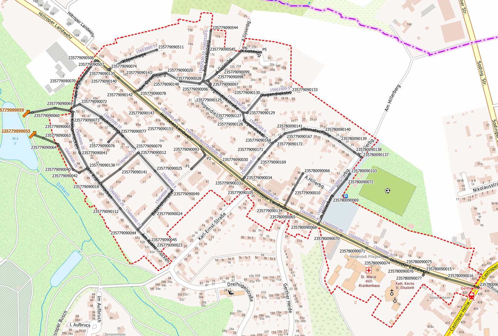Korrektur von Demodaten
Es kann bei Datenimporten häufiger vorkommen, dass eine Korrektur notwendig ist, da die verwendeten Bezeichnungen mit den in QKan vorhandenen Bezeichnungen in den Referenztabellen übereinstimmen muss. Fehler in der Bezeichnung werden in den Attributtabellen durch Klammern () um den in der Referenztabelle nicht vorhandenen Begriff gekennzeichnet. In diesem Workflow ist so beispielsweise die Profilbezeichnung der Haltungen fehlerhaft. Wird die Attributtabelle der Haltungen geöffnet, so kann man sehen, dass die Profilbezeichnung „Kreisquerschnitt, normal“ in Klammern () aufgeführt wird. Um diesen Fehler zu beheben, kann einfach die Bezeichnung aus der Attributtabelle mit einem Rechtsklick kopiert werden. Anschließend kann in der entsprechenden Referenztabelle (Hier: Profile) die Bezeichnung hinzugefügt oder eine bestehende Bezeichnung geändert werden. Da in diesem Fall bereits der Eintrag „Kreis“ vorhanden ist, kann sie durch die kopierte Bezeichnung ersetzt werden. Dafür muss die Tabelle im Bearbeitungsmodus sein. Die entsprechende Zelle kann durch Doppelklick ausgewählt und die Bezeichnung eingefügt werden. Nun sollte die Änderung gespeichert und der Bearbeitungsmodus ausgeschalten werden. In der Attributtabelle sollte nun die Profilbezeichnung ohne Klammern erscheinen.
Als nächstes kann mit dem Import der Flächendaten begonnen werden.
Import von Flächendaten
Eine Videoanleitung zum Import von Flächendaten ist hier zu finden.
Für die Abflussberechnung mit einem Simulationsprogramm ist es notwendig, das Einzugsgebiet in Flächen mit einheitlichen Abflussparametern/Flächendaten zu unterteilen. Dafür können Flächendaten (für NRW) aus dem INSPIRE-Portal genutzt werden. Um diese Daten laden zu können, wird das Plug-in „WFS 2.0 Client“ benötigt, das unter Erweiterungen installiert werden kann.
Import Gebäudedaten
Als erstes sollen nun die Flächen der Gebäude in das QKan Projekt eingefügt werden. Von der INSPIRE-Startseite kann über einen Klick auf das entsprechende Thema (INSPIRE NW Gebäude) der Link für die WFS-Daten gefunden werden. Dieser befindet sich auf der Seite weiter unten unter „Webdienste“. Wichtig hierbei ist, dass der WFS-Link kopiert wird und nicht der WMS-Link:

In QGIS muss nun der „WFS 2.0 Client“ unter Web → WFS 2.0 Client geöffnet werden. Dort wird der kopierte Link in der ersten Zeile eingefügt und die angebotenen Themen werden über GetCapabilities abgerufen:

Da der Dienst eine Begrenzung der Datenmenge verlangt empfiehlt es sich, eine räumliche Beschränkung zu aktivieren. Diese ist möglich indem Use current Extent as Bounding Box Filter aktiviert wird (siehe Bild unten). Dadurch übernimmt das Programm die Grenzen der auf dem Bildschirm angezeigten Fläche für den Datenzugriff. Es ist daher wichtig, zunächst einen geeigneten Anzeigebereich einzustellen. Anschließend sollte das Feature Limit erhöht werden (z.B. auf 5000), welches die Anzahl der übertragenen Objekte beschränkt, damit sichergestellt wird, dass alle Objekte übertragen werden. Nun können die Objekte über Get Feature(s) geladen werden:

Als Kontrolle sollte anschließend die Anzahl der übertragenen Objekte mit dem Feature Limit verglichen werden. Ist diese Zahl identisch, dann ist davon auszugehen, dass nicht alle Objekte übertragen wurden. In diesem Fall müssten die Objekte erneut mit einem erhöhten Feature Limit geladen werden.
Die geladenen Objekte erscheinen nun in dem neuen temporären Layer „Building“. Zur weiteren Bearbeitung müssen diese jedoch in den Layer „Flächen“
kopiert werden. Dafür ist es empfehlenswert nur die Objekte im relevanten Teilgebiet zu übertragen.
Die Objekte im Teilgebiet können über Verarbeitungswerkzeuge → Vektorauswahl → Nach Position selektieren ausgewählt werden.
Dabei sind die Eingaben-Layer die Layer „Building“ und „Teilgebiet“. Außerdem sollten bei der Optionswahl bei dem Ort der Objekte nur die Objekte,
welche sich innerhalb des Teilgebietes befinden, ausgewählt werden. Nun können die ausgewählten Objekte kopiert werden
(Bearbeiten → Objekte kopieren) und in den Layer „Flächen“ eingefügt werden. Dieser muss dafür im Bearbeitungsmodus  sein.
Die Objekte werden dann über Bearbeiten → Objekte einfügen → Alle einfügen (einschl. Ungültigen) eingefügt:
sein.
Die Objekte werden dann über Bearbeiten → Objekte einfügen → Alle einfügen (einschl. Ungültigen) eingefügt:
Für die Abflussberechnung ist es nun erforderlich, dass die Attributtabelle ergänzt wird. Dafür sollte die Tabelle wie folgt ergänzt werden:
Name: beliebiger eindeutiger Name (sinnvoll ist hier eine automatisch Bezeichnung durch einen Code, z.B.:
'fl_' || lpad(format_number( pk),4,0)Teilgebiet: Name/Nummer des zu bearbeitenden Teilgebiets
Regenschreiber: Name/Nummer des Regenschreibers der zur Berechnung verwendet wird
Abflussparameter: ‚Dach‘ (Erscheint der Name in Klammern () in der Tabelle muss die Bezeichnung in der Abflussparameter-Tabelle von HYSTEM-EXTRAN angepasst werden. Diese liegt auf dem Layer → Referenztabellen → Abflussparameter HE. In diesem Fall muss die Bezeichnung „Gebäude“ in „Dach“ geändert werden:

Die Attributtabelle sollte nun ungefähr wie hier dargestellt aussehen:

Die Objekte sollten nun im Plan in der Schraffur des Layers „Dach“ angezeigt werden. Die Daten der Gebäudeflächen sind nun ausreichend vorbereitet und sollten gespeichert werden und anschließend der Bearbeitungsmodus deaktiviert werden. Analog können nun die weiteren Flächen hinzugefügt werden.

Abbildung: Ergebnis Import Gebäudedaten
Import Flurstücke
Analog zu dem Import der Gebäudedaten verläuft nun der Import der Daten für die unbefestigten Flächen (Flurstücke). Den WFS-Link findet man auf der INSPIRE-Seite unter dem Thema „INSPIRE NW Flurstücke/Grundstücke“. Die importierten Objekte werden auf dem Layer „CadestralParcel“ angezeigt.
Um nur die Flächen, welche innerhalb des Teilgebietes liegen, für die weitere Bearbeitung zu nutzen, sollte hier mit dem Verschneidungs-Tool (Vektor → Geoverarbeitungswerkzeuge → Verschneidung) gearbeitet werden. Als Eingabelayer sollte der Layer mit den importierten Daten „CadestralParcel“ gewählt werden, als Layer zur Überlagerung der Layer „Teilgebiete“. Die zugeschnitten Objekte liegen nun auf dem temporären Layer „Verschneidung“ und können alles ausgewählt (Bearbeiten → Auswählen → Alle Objekte wählen) und kopiert werden (Bearbeiten → Objekte kopieren). Die kopierten Objekte sollen nun auf dem Layer „Haltungsflächen“ hinzugefügt werden. Dieser muss hierzu im Bearbeitungsmodus sein.

Analog zu den Gebäude-Daten muss auch hier die Attributtabelle angepasst werden:
Name: beliebiger eindeutiger Name (sinnvoll ist hier eine automatisch Bezeichnung durch einen Code, z.B.:
'hf_' || lpad( format_number( pk),4,0)Teilgebiet: Name/Nummer des zu bearbeitenden Teilgebiets
Regenschreiber: Name/Nummer des Regenschreibers der zur Berechnung verwendet wird
Abflussparameter: Um Fehler zu vermeiden kann hier sofort der Name für unbefestigte Flächen ‚$Default_Unbef‘ aus der Attributtabelle „Abflussparameter HE“ kopiert und eingefügt werden.
Die Änderungen müssen gespeichert werden und der Bearbeitungsmodus kann deaktiviert werden. Die Attributtabelle sollte nun ungefähr wie unten dargestellt aussehen. Die Schraffur (Kontur) der Objekte sollte ebenfalls dem Layer „Haltungsflächen“ entsprechen.
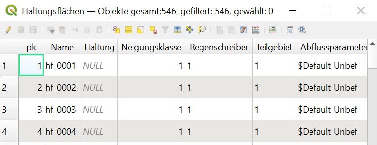Abbildung: Attributtabelle nach Bearbeitung
Import Straßen
Als letzter Datensatz sind noch die Straßenflächen zu importieren. Der Link für die WFS-Daten kann auf der INSPIRE-Seite unter dem Thema „Verkehrsnetze“ gefunden werden. Es muss der ALKIS-Link (s.u.) kopiert werden.

Bei der Datenabfrage mit WFS 2.0 Client ist darauf zu achten, dass hier in dem Drop-down Menü als Feature Type „RoadArea“ ausgewählt wird. Der Rest des Vorgehens läuft analog zu den vorher beschriebenen Vorgängen ab.
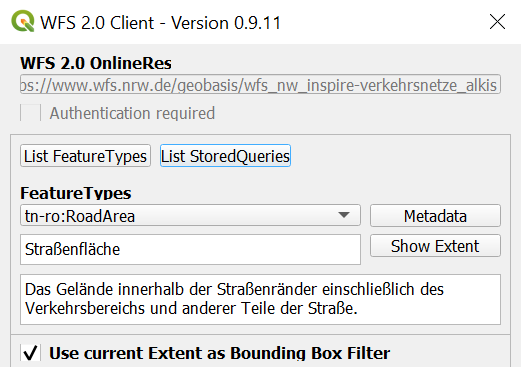Auch hier sollten mit dem Verschneidungs-Tool die importierten Objekte auf die Ausdehnung des Teilgebietes reduziert werden (Vorgehen analog zu Import Flurstücke). Alle Daten des neuen Layers „Verschneidung“ sollten nun wieder kopiert und in den Layer „Flächen“ eingefügt werden.
Bei der Ergänzung der Attributtabelle muss darauf geachtet werden, dass die Änderungen durch Gewählte aktualisieren (!) vorgenommen werden, damit nicht auch die schon vorhandenen Gebäudeflächen geändert werden. Die Tabelle wird ebenfalls um folgende Attribute ergänzt:
Name: beliebiger eindeutiger Name (sinnvoll ist hier eine automatisch Bezeichnung durch einen Code, z.B.:
'fl_' || lpad( format_number( pk),4,0)Teilgebiet: Name/Nummer des zu bearbeitenden Teilgebiets
Regenschreiber: Name/Nummer des Regenschreibers der zur Berechnung verwendet wird
Abflussparameter: ‚Strasse‘ (Erscheint der Name in Klammern () in der Tabelle muss die Bezeichnung in der Abflussparameter-Tabelle von HYSTEM-EXTRAN angepasst werden. In diesem Fall muss die Bezeichnung „Straße“ in „Strasse“ umgeändert werden.)
Alle nötigen Flächendaten sind nun importiert und vorbereitet. Als nächstes sollten die unbefestigten Flächen erzeugt werden.

Abbildung: Planschraffur nach fertigem Import
Erzeugung unbefestigter Flächen
Eine Videoanleitung zur Erzeugung von unbefestigten Flächen ist hier zu finden.
Bevor die unbefestigten Flächen erzeugt werden können, ist es wichtig, zu prüfen, ob die Attributtabellen der Flächenobjekte („Haltungsflächen“ und „Flächen“) vollständig ausgefüllt sind. Das bedeutet, die Spalten „Name“, „Teilgebiet“, „Regenschreiber“ und „Abflussparameter“ müssen vollständig ausgefüllt sein. Wenn keine Flächen vorhanden sind oder die Tabellen unvollständig sind, ist hier eine Beschreibung des Vorgehens.
Eine Verschmelzung der kleinen Flächen ist nicht mehr notwendig, da eine hohe Anzahl an Flächenschwerpunkten für die Programme heute kein Problem mehr darstellen.
Die unbefestigten Flächen können nun also direkt erstellt werden. Dies geschieht mit  Erzeuge unbefestigte Flächen.
Das geöffnete Fenster kann ohne eine Auswahl mit OK bestätigt werden.
Erzeuge unbefestigte Flächen.
Das geöffnete Fenster kann ohne eine Auswahl mit OK bestätigt werden.
Die unbefestigten Flächen werden so automatisch erstellt und liegen auf dem Layer „$Default_Unbef“ welches auch die Schraffur der Flächen anzeigt.

Abbildung: Flächen vor Anwendung des Tools

Abbildung: Schraffur der unbefestigten Flächen
Als nächstes müssen die befestigten Flächen für die Zuordnung zu den Haltungen vorbereitet werden.
Vorbereitung zur Flächenzuordnung
Eine Videoanleitung zur Vorbereitung zur Flächenaufteilung ist hier zu finden.
Nachdem die unbefestigten Flächen erstellt wurden, ist nun noch ein letzter Vorbereitungsschritt notwendig, bevor der Export in ein Simulationsprogramm (HYSTEM-EXTRAN, Mike++ o.ä.) durchgeführt werden kann. Simulationsprogrammme erfordern, dass alle Flächen genau einer Haltung zugeordnet werden können. Große Flächen (welche sich über mehrere Haltungen erstrecken), müssen hierfür aufgeteilt werden, damit die Teilstücke der entsprechenden Haltung zugeordnet werden können. Dies ist mit QKan nun automatisch möglich. Hierfür zerteilt QKan die Flächenobjekte selber nicht, was den Vorteil hat, dass die Flächendaten im originalen Zustand erhalten bleiben und einzelne Objekte ohne Probleme ausgetauscht werden können. Die Aufteilung der Flächen geschieht erst beim Export in das Simulationsprogramm anhand der Haltungsflächen.
Bevor die automatische Flächenzuordnung jedoch durchgeführt werden kann, müssen die Daten noch entsprechend vorbereitet werden.
Dafür sollten als erstes die Haltungen markiert werden, an welche kein Regenwasser angeschlossen ist, da sie bei der automatischen Flächenzuordnung ignoriert werden sollen.
Diese Markierung geschieht über das Attribut „Entwässerungssysteme“ der Haltungsdaten.
Hierfür muss der Layer Haltungen → Haltungen ausgewählt und im Bearbeitungsmodus sein.
Es sollten nun alle Haltungen ausgewählt werden, an die kein Regenwasser angeschlossen ist (z.B. Haltungen die „nur“ zum Auslauf führen; kurze Haltungen in Kreuzungsbereichen etc.).
Anschließend können die gewählten Haltungen in der Attributtabelle über den Filter Alle gewählten Objekte anzeigen (siehe Bild unten) angezeigt werden.
Das Entwässerungssystem muss nun für diese Haltungen von „Mischwasser“ auf „MW nicht angeschlossen“ geändert werden.
Dafür sollte von der Listen-Ansicht auf die Formular-Ansicht gewechselt werden (Schaltfäche rechts unten, siehe Bild unten).

Hierbei sollte darauf geachtet werden, dass eine der gewählten Haltungen ausgewählt ist (und nicht die erste Haltung der Liste). Dies kann sichergestellt werden, indem man über den Pfeil links unten, einen Schritt nach vorne geht (siehe Bild unten). Der Haltungsname oben im Formular sollte nun mit einem Eintrag aus der Liste (links, grau hinterlegt) übereinstimmen. Anschließend kann das Entwässerungssystem über die Drop-Down-Liste von „Mischwasser“ zu „MW nicht angeschlossen“ geändert werden.

Nun kann wieder in die Listen-Ansicht gewechselt werden. Mit einem Rechtsklick auf die geänderte Zelle kann der Zellinhalt kopiert werden. Anschließend kann in der Drop-Down-Liste der Quick Field Calculation Bar die Spalte Entwässerungssystem gewählt werden. In das Formelfenster wird der kopierte Zellinhalt mit Anführungsstrichen eingefügt und mit Gewählte aktualisieren werden alle ausgewählten Haltungen entsprechend angepasst.

Nun können die Änderungen gespeichert, der Bearbeitungsmodus ausgeschalten und die Auswahl aufgehoben werden.
Als nächstes sollten die großen Flächen markiert werden, welche bei einem Export aufgeteilt werden müssen. In der Attributtabelle der Flächen ist hierfür eine extra Spalte Aufteilen vorgesehen. Diese sollte zunächst für alle Flächen das Attribut „false“ enthalten. Ist dies nicht der Fall, kann dies einfach geändert werden, indem aus der Drop-Down-Liste der Quick Field Calculation Bar die Spalte Aufteilen gewählt wird und in das Formelfenster der Wert „0“ eingegeben wird. Mit Alle aktualisieren wird die Änderung für alle Flächen übernommen. (In der Spalte sollte nun „false“ ohne Klammern erscheinen.)
Danach müssen alle Flächen ausgewählt werden, die mehreren Haltungen zugeordnet werden können (z.B. Straßen, große Gebäude oder große unbefestigte Flächen).
Die Auswahl könnte beispielsweiße so aussehen:

Jetzt kann in der Attributtabelle die Spalte Aufteilen für die gewählten Flächen angepasst werden. Dabei muss für die entsprechende Spalte der Wert „1“ in die Calculation Bar eingegeben werden und mit Gewählte aktualisieren wird er Wert für die gewünschten Flächen übernommen. Die Flächen sollten nun den Wert „true“ (ohne Klammern) in der Spalte Aufteilen enthalten. Anschließend können die Änderungen wieder gespeichert und die Auswahl aufgehoben werden.
Als letzten Schritt müssen die Voronoiflächen erzeugt werden.
Diese Flächen verfeinern die Haltungsflächen an den Stellen, wo eine Aufteilung der darin enthaltenen Flächen (z.B. Straßen) notwendig ist.
Dies ist mit  Erzeuge Voronoiflächen zu Haltungen ganz einfach möglich.
Nach einem Klick auf die Schaltfläche, muss in dem sich öffnenden Fenster nur die richtige Entwässerungsart (Mischwasser) ausgewählt werden und kann anschließend mit OK bestätigt werden.
Das Programm nimmt nun die Verfeinerung der Haltungsflächen selbstständig vor.
Erzeuge Voronoiflächen zu Haltungen ganz einfach möglich.
Nach einem Klick auf die Schaltfläche, muss in dem sich öffnenden Fenster nur die richtige Entwässerungsart (Mischwasser) ausgewählt werden und kann anschließend mit OK bestätigt werden.
Das Programm nimmt nun die Verfeinerung der Haltungsflächen selbstständig vor.
Flächen mit Haltungen verknüpfen
Nachdem die Flächen vorbereitet wurden, können diese nun mit den Haltungsflächen verknüpft werden, zu denen sie entwässern. .. Eine Videoanleitung zur Verknüpfung der Flächen mit Haltungen ist hier zu finden.
Die Verknüpfung geschieht über das Tool 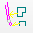 Erzeuge Verknüpfungslinien von Flächen zu Haltungen. In der Regel werden bei den Filteroptionen, in dem nun geöffneten Fenster, nur die Haltungen spezifiziert. Dafür wird in der Tabelle „Haltungen“ der Eintrag „Mischwasser“ ausgewählt (siehe Bild). Bei den Optionen zur Erzeugung von Zuordnungen kann gegebenenfalls der Suchradius (siehe Bild) vergrößert werden. Der Suchradius begrenzt den Bereich, indem die Zuordnung vorgenommen wird. Daher ist die Anpassung vor allem sinnvoll, wenn einige Flächen weit entfernt von Haltungen liegen und dennoch angeschlossen werden sollen. Auch die anderen Optionen sollten entsprechend dem hier dargestellten Beispiel ausgewählt werden.
{kind=link}

Das Fenster kann dann mit OK geschlossen werden. Die Verknüpfungslinien erscheinen nun im Plan.
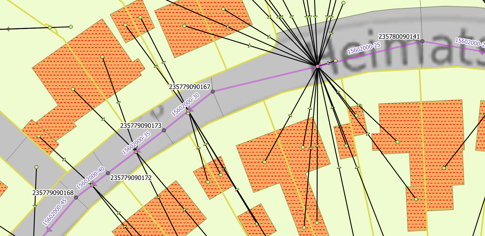Nachdem die Verknüpfungslinien erstellt wurden, müssen noch die Parameter zur Oberflächenabflussberechnung angepasst werden.
Die entsprechenden Parameter sind in QKan in den Verknüpfungslinien gespeichert.
Erzeugt werden können diese mit  Oberflächenabflussparameter eintragen.
Dabei kann das sich öffnende Fenster ohne eine Änderung (siehe Bild unten) mit OK geschlossen werden.
Oberflächenabflussparameter eintragen.
Dabei kann das sich öffnende Fenster ohne eine Änderung (siehe Bild unten) mit OK geschlossen werden.

In der Attributtabelle ist nun die Spalte Fließzeit Fläche mit Werten gefüllt. Alle nötigen Vorbereitungen für einen Export nach HYSTEM-EXTRAN sind nun durchgeführt.
Es können auch nachträglich Verbindungslinien bearbeitet oder hinzugefügt werden.
Verbindungslinien hinzufügen
War der Suchradius zu gering gewählt, kann es vorkommen, dass Flächen nicht mit Haltungen automatisch verknüpft werden.
Soll eine Fläche von Hand mit einer Haltung verknüpft werden,
muss dafür der entsprechende Layer „Anbindungen Flächen“ ausgewählt und im Bearbeitungsmodus sein.
Anschließend kann über  Linienobjekt hinzufügen durch Anklicken der entsprechenden Fläche,
danach der gewünschten Haltung und anschließend durch Bestätigung mit einem Rechtsklick, eine Verknüpfungslinie erstellt werden.
Im Gegensatz zu anderen Geo-Objekten, öffnet sich bei der Erstellung von Verknüpfungslinien kein Formularfenster.
Dies ist über die Layereigenschaften so vorgegeben, da es standartmäßig nicht benötigt wird.
Linienobjekt hinzufügen durch Anklicken der entsprechenden Fläche,
danach der gewünschten Haltung und anschließend durch Bestätigung mit einem Rechtsklick, eine Verknüpfungslinie erstellt werden.
Im Gegensatz zu anderen Geo-Objekten, öffnet sich bei der Erstellung von Verknüpfungslinien kein Formularfenster.
Dies ist über die Layereigenschaften so vorgegeben, da es standartmäßig nicht benötigt wird.
Verbindungslinien bearbeiten
Vorhandene Verbindungslinien können auch im Nachhinein geändert werden.
Dazu muss im Bearbeitungsmodus das Stützpunkt-Werkzeug  ausgewählt werden.
Nun kann die zu ändernde Verbindungslinie editiert werden, indem der Endpunkt angeklickt und auf die gewünschte Haltung gezogen wird.
Wichtig hierbei ist, dass der Menüpunkt Topologisches Editieren deaktiviert ist,
da sonst alle Haltungen, die an dieser Stelle verknüpft sind mitausgewählt werden.
ausgewählt werden.
Nun kann die zu ändernde Verbindungslinie editiert werden, indem der Endpunkt angeklickt und auf die gewünschte Haltung gezogen wird.
Wichtig hierbei ist, dass der Menüpunkt Topologisches Editieren deaktiviert ist,
da sonst alle Haltungen, die an dieser Stelle verknüpft sind mitausgewählt werden.
{kind=link}
Export nach HYSTEM-EXTRAN
Anpassung des Datumsformates
Bevor der Export-Vorgang gestartet wird, sollte das Datumsformat geprüft werden, da dieses häufiger zu Problemen führt.
Das Datumsformat muss für den Export in der Form „yyyy-mm-dd hh:mm:ss“ in der Tabelle vorliegen.
In dem hier verwendeten Datensatz fehlt die Sekundenangabe.
Um dies zu ändern muss die Attributtabelle geöffnet und im Bearbeitungsmodus sein.
Anschließed sollte das Feld „bearbeitet“ aus der Drop-Down-Liste ausgewählt werden.
In die Schnellfeldberechnungsleiste sollte nun das Datum in dem benötigten Format 'yyyy-mm-dd hh:mm:ss' (Achtung: einfache Anführungszeichen verwenden!) eingetragen werden.
Mit „Alle aktualisieren“ kann der Zellinhalt für alle Zellen übernommen werden.
Es ist zu empfehlne die Eingabe zu kopieren, da dieser Schritt für alle Attributtabellen wiederholt werden muss.

Datumsformat vor Bearbeitung
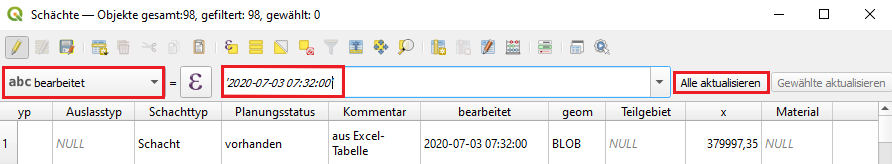Datumsformat nach Bearbeitung
Nun muss das Datum in allen Attributtabellen angepasst werden, die aus Excel übernommen wurden. Daten, die das Programm selber erstellt hat, sind automatisch im richtigen Format gespeichert.
Erstellung einer Vorlagen-Datenbank in HYSTEM-EXTRAN
Für den Export der Daten von QKan nach HYSTEM-EXTRAN wird eine Vorlage-Datenbank benötigt. Zur Erstellung dieser muss HYSTEM-EXTRAN gestartet werden. Über Datei und Neu… kann eine neue Datenbank angelegt werden. Für den Export ist es notwenidg, eine Regenreihe mit einem dazugehörigen Regenschreiber anzulegen. In dem Dialogfenster des Regenschreibers können die Daten wie unten dargestellt ergänzt werden. Wichtig hierbei ist, dass der Regenschreiber den Namen erhält, der auch in den Flächendaten verwendet wurde (hier: „1“).

Eingabeformular aus dem Programm HYSTEM-EXTRAN, ITWH GmbH
Die Regenreihe kann über Assistenten und Modellregen… hinzugefügt werden. In diesem Beispiel wird eine Modellregen des Euler Typ II mit einer Jährlichkeit von drei Jahren erstellt. Der Name kann frei gewählt werden (hier: Euler_II_3a). Auch das Datum ist frei wählbar. Es sollte jedoch darauf geachtet werden, dass die Dauer realistisch ist (hier: 60 Minuten mit einer Intervallbreite von 5 min.). Anschließend sollte die Modellregen-Art „Euler Typ II“ mit einer Jährlichkeit von 3 Jahren („a“) festgesetzt werden. Die Regenmenge soll nach KOSTRA-DWD ermittelt werden. Zum Definieren des KOSTRA-DWD-Datensatzes können die Daten wie unten abgebildet übernommen werden.
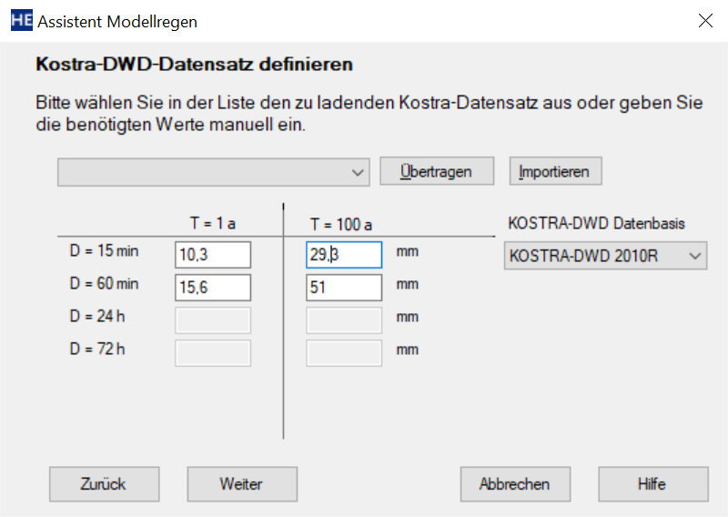Eingabeformular aus dem Programm HYSTEM-EXTRAN, ITWH GmbH
Diese Daten können aus einem Projekt, welches hier zum download zur Verfügung steht, übernommen werden. Dazu muss das zu bearbeitende Gebiet auf der Karte gesucht werden. Im Anschluss können die Daten über Info-Tool mit einem Klick auf die Karte abgerufen werden.
{kind=link}

Eingabeformular aus dem Programm HYSTEM-EXTRAN, ITWH GmbH
Nun wurden alle nötigen Definitionen getroffen und der Modellregen kann erstellt werden. Bei der nun erstellten Regenreihe muss noch der Name der Station mit dem Namen welcher beim Regenschreiber gewählt wurde angepasst werden (hier: „1234“). Anschließend kann die Maske geschlossen werden und das Projekt kann gespeichert werden. Da das Beispielprojekt keine Sonderbauwerke (z.B. Drosseln, Pumpen oder Wehre) besitzt, müssen diese hier auch nicht angelegt werden. So ist die Vorlage-Datenbank nun ausreichend vorbereitet und HYSTEM-EXTRAN muss geschlossen werden. (HYSTEM-EXTRAN öffnet eine Datenbank exklusiv, dass heißt, dass es nicht möglich ist, gleichzeitig mit einer anderen Anwendung auf diese Datenbank zuzugreifen. Dies würde daher zu einer Fehlermeldung beim QKan Export führen.)
Export nach HYSTEM-EXTRAN 8
Jetzt kann das Formular „Export to HE“ mit 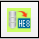 Export nach HE geöffnet werden. In dem Formular wird die soeben erstellte Vorlage-Datenbank und ein Datenziel, welches definiert werden muss, ausgewählt. Die übrigen Auswahlfelder sollten wie unten dargestellt übernommen werden. Dann kann der Export mit OK gestartet werden.
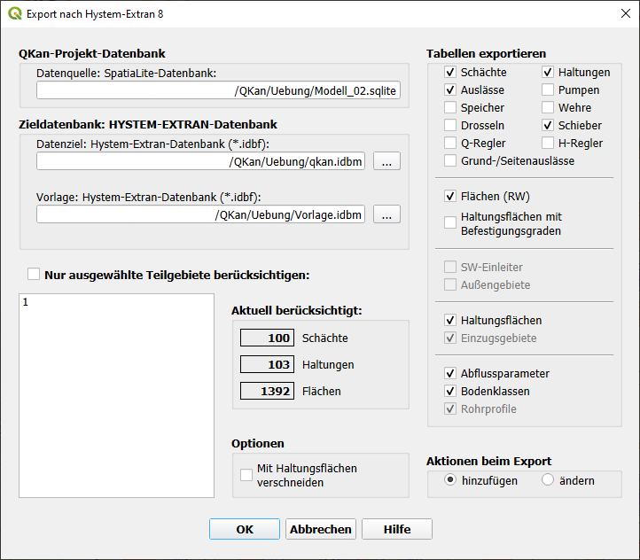{kind=link}
Die fertige Export-Datenbank kann nun mit HYSTEM-EXTRAN geöffnet werden. Es sollten nur kleinere Fehler in den Meldungen erscheinen (z.B. fehlerhafte Sohlhöhen und zu lange Namen) die zum Teil händisch angepasst bzw. ignoriert werden können. Damit ist der Workflow abgeschlossen.

Ergebnis mit dem Programm HYSTEM-EXTRAN, ITWH GmbH
Übersicht: Videoanleitungen zum Workflow
An einem Beispielprojekt wird der Workflow beginnend mit dem Datenimport über die Datenaufbereitung bis zum Export in ein Simulationsprogramm demonstriert und erläutert.
Excel-Datei mit Vorlagedaten (Anzeige und Download)
- Zu den Videos:
Anlegen eines neuen QKan-Projektes
Eine Videoanleitung zum Anlegen eines neuen QKan-Projektes aus einer bestehenden HYSTEM-EXTRAN-Datenbank und zum anschließenden Einbinden von Flächendaten finden Sie hier:
Übernahme von Kanaldaten aus Excel- oder ASCII-Tabellen
- Eine Anleitung zum Einfügen von Kanaldaten aus Tabellendaten
Vorbereitung eines einfachen Projektes für den HYSTEM-EXTRAN-Export
In der Videoanleitung wird an einem einfachen Beispiel die Datenvorbereitung für einen Export nach HYSTEM-EXTRAN 8.4 gezeigt. In diesem Projekt wird auf die Verwendung von Haltungsflächen verzichtet.
Übertragen einer anderen Projektdatei auf eine QKan-Datenbank
- Eine Videoanleitung, wie für eine bestehende QKan-Kanaldatenbank eine Vorlage-Projektdatei geladen werden kann:
Anzeigen von Berechnungsergebnissen aus HYSTEM-EXTRAN 8.x
- Eine Videoanleitung, wie Ergebnisdaten als Ganglinien und als animierte Längsschnitte angezeigt werden können:
Einfügen eines Zeichnungsrahmens aus einer mit Autocad erstellten Vorlage
Eine Videoanleitung, wie ein mit AutoCAD erstellter Zeichnungsrahmen in ein QGIS-Layout eingefügt wird, finden Sie hier:
Import eines Kanal++ Projektes nach QKan
- Eine Videoanleitung, wie ein Kanal++ Projekt nach QKan übertragen werden kann, finden Sie hier: